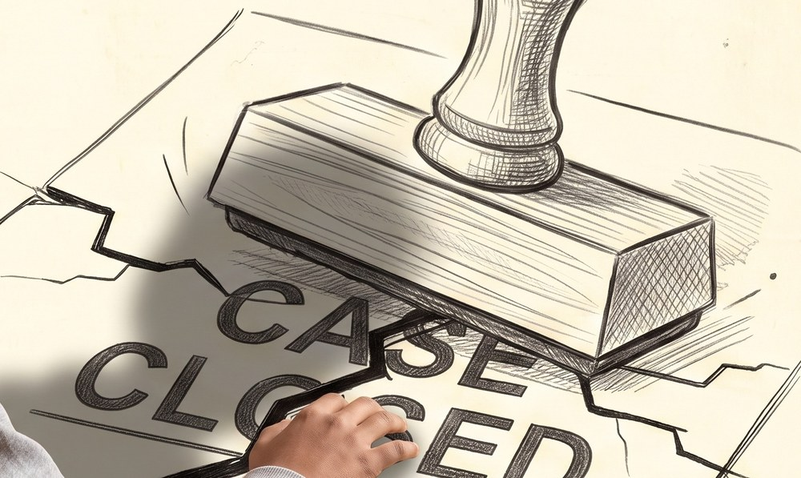
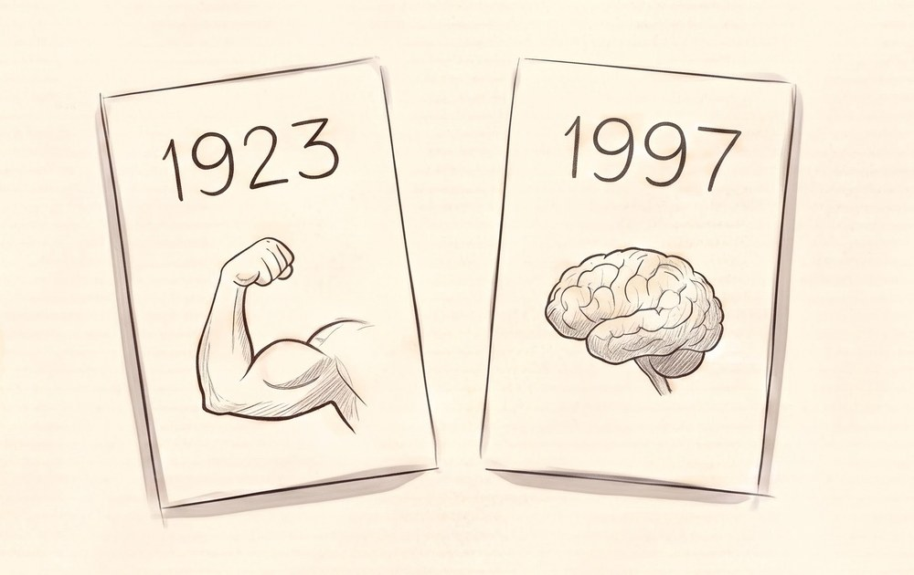
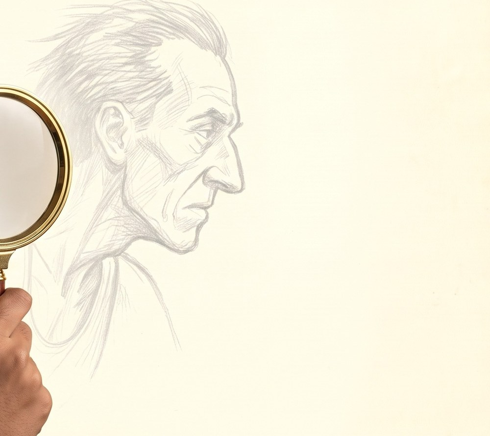
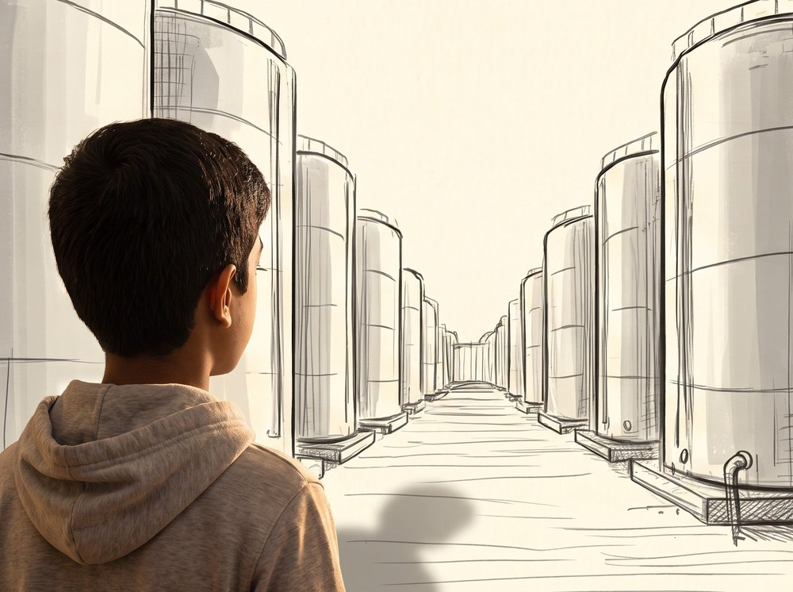
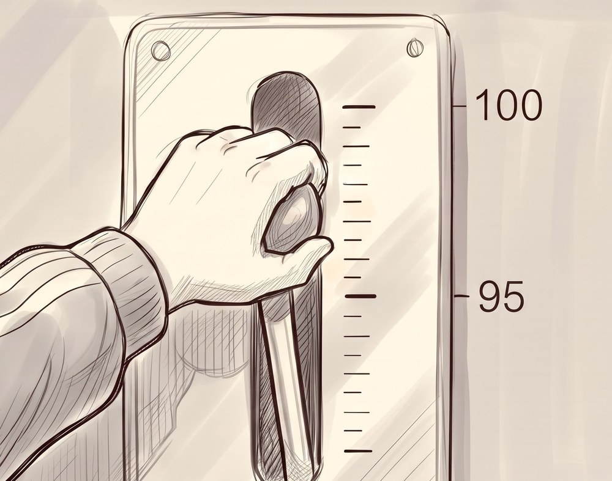
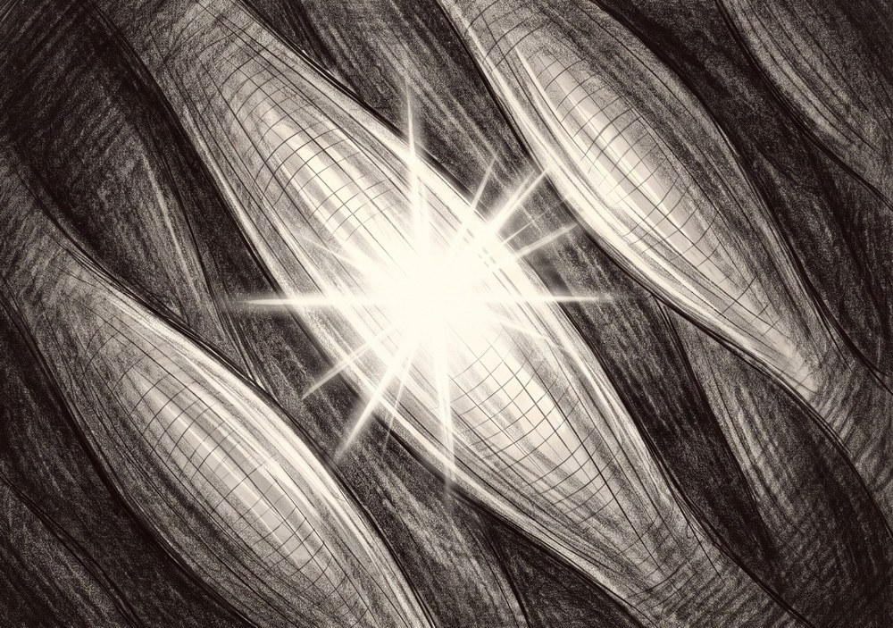
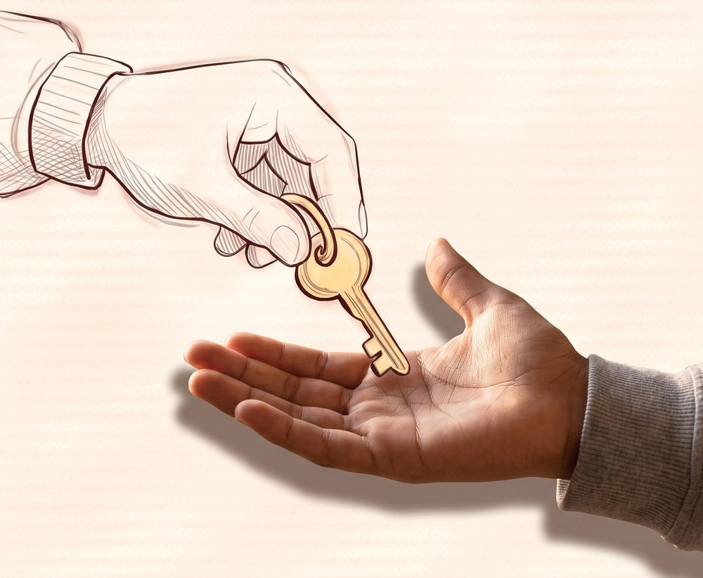
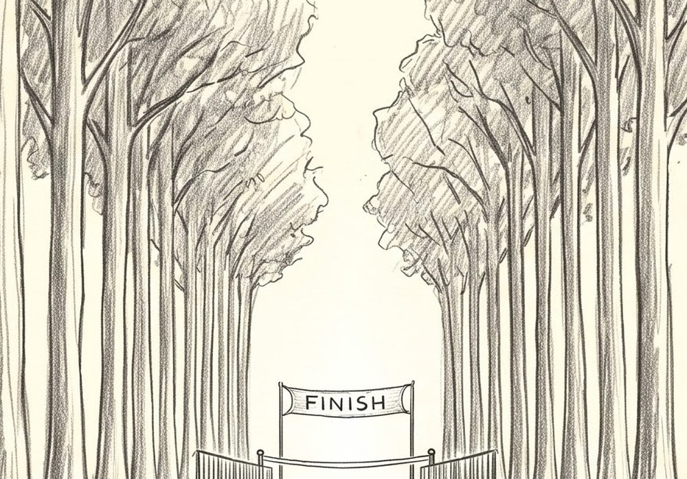

THE BRAIN BRAKE
V8 DRAFT. Scene 1 is being rebuilt from scratch and everything on this site is part of that draft. The V7 artwork is not gone: it is stored, it is still what the film is cut from, and any of it can be pulled back and modified rather than drawn again. If an older picture is better, we go back to it. Nothing here is in the film until Marko says so.
The frame

A two minute film for the Breakthrough Junior Challenge. A fourteen year old asks why a runner with nothing left can still find one more sprint. Everything here is for the animation.
Everything is 2731 x 1536, true 16:9. Key light is camera right, always.
Nothing here is in the film until Marko says so. The status under each picture says where it stands.
Video files are on GDrive, top right of every page.
Scenes
- SC1The mysterynothing yet
- SC2The old theorynothing yet
- SC3The full tanknothing yet
- SC4The gatekeepernothing yet
- SC5The experimentnothing yet
- SC6The releasenothing yet
- SC7The verdictnothing yet
- SC8The invitationnothing yet
What changed
The frame as a matte. 2731 x 1536 RGBA. The paper margin and the drawn line are solid, and the window in the middle is transparent, so you drop it straight on top of any frame and it cuts its own window: the artwork shows through and the border and the margin come from this layer. The window edge follows the hand drawn wobble exactly, because it was found by walking outward from the centre of a real drawing until it hit the line, rather than by drawing a rectangle. Cut out of existing artwork, not generated, so it is the same pencil and the same paper as everything it sits on. Move it, scale it, animate it or take it off.
THIS IS THE MAN. Three studies of his head: front, three quarter, profile. Until today the only description of his face in the whole production was nine generic words, so every frame invented him again and he was a different person in each one. This sheet is the lock. The three things that carry him and must survive into every frame are the flattened bridge of the nose, the wide set deep eyes under a straight brow, and the narrow jaw under wide cheekbones. Individual views are cut out in reference/ for building frames from, because a sheet handed to a frame brings its grid with it.
The border line alone, with everything around it transparent. Wrong shape for the job: laid over a frame it drew a line and did nothing else. Kept, and the link still works. Superseded by v2.
The runner's body, four views: front, three quarter, profile, rear. Lean, about forty five, singlet and shorts, bib 27, worn racing shoes. The face sheet below is the one that holds his identity; this one holds his build and his costume.
The whole film as it stands, four panels to a page, with every line and every frame number. The live action frames now show the real footage from the shoot beside the drawn version, with the clip and the timecode on each. At the back there are two pages of clean footage frames, one per shot, for pulling into tests. This is not a proposal, it is the current version of the document. Superseded by v8. It is not deleted and the link still works, but v8 is the one to read.
The whole film as it stands, four panels to a page, fifty panels, with every line and every frame number. Live action frames show the real footage from the shoot beside the drawn version with the clip and the timecode on each. The number jumped from v4 straight to v8 so that the document and the artwork generation now carry the same number: what you are reading is V8. This is not a proposal, it is the current version of the document.
Anything that moves on its own comes to you as three files, never as one picture. This is the pattern, shown with the frame because the frame is already done. The sweat droplets on shot 1.1 arrive the same way: a plate with dry skin, the droplets alone on transparency, and a composite so there is never a question about where they sit. If you need a different split than the one you are given, tick need a breakdown on the key frame and say what you want separated.
KEY FRAME 1 of 3. He is finished and he believes he still has ten kilometres to run, which is why the exhaustion is total. Head down, eyes on the ground, mouth open. The emotion changes inside this one shot without a cut, so these three are the start, middle and end of a single continuous move: hold this, then lift through v12, then land on v13.
KEY FRAME 2 of 3. The head lifting, the eyes coming up off the ground. This is the middle of the move and the audience does not yet know why he is rising.
KEY FRAME 3 of 3. He has seen it. Lids up, brow up, mouth closed and set, shoulders squared, the exhaustion gone out of the face. End the shot here and cut. The audience asks why he changed, and shot 1.2b answers.
What he sees. His subjective view down the avenue, the finish banner caught small in the gap between the trunks. This is the answer to the question the previous shot planted, and it is what explains the trees: he could not have seen it before, so his exhaustion was honest.
He runs like a man who has just started the race, not a tired man finding something left. THIS IS WHERE THE STROBE DROPS. The film is stepped everywhere else; here it goes to full frame rate. It is one of only two moments in the whole film that do, the other being Manan on the bicycle, and it only works because everything around it is stepped.
A century of settled science, pressed flat onto paper. It is what the film reopens. The stamp is not villainous, it is what happens when an answer is good enough for long enough that nobody asks again. Scene 2.
The old answer and the new one, side by side: an arm, and a brain. Fatigue was in the muscle for seventy four years before anyone looked higher up. The film is the gap between these two cards. Scene 7.
Manan's tool and his posture. He is not a student being taught, he is an investigator looking closer at something everybody already believes they understand. It is also the film's only handheld object that crosses between the photographed world and the drawn one. Scenes 1 and 2.
The body as a factory, and the tanks are full. A man says he is empty while his stores stand untouched behind him. Scarcity that turns out to be policy, not supply. Scene 3.
The centre of the whole film in one object. Effort is not a wall you hit, it is a dial somebody set, and it is sitting at ninety five. A wall cannot be moved. A setting can. Scenes 6 and 8.
Recruitment, seen from inside. One muscle fibre fires, then the cluster, then the leg, then the whole body. This is the muscle activation motif, and it is the only thing in the film animated at full frame rate. It appears three times, identical each time. Scenes 1, 5 and 6.
Handed from one palm to another. The brake can be released, but only by someone who has been told it exists. Knowledge as permission, and the reason the film is worth making at all. Scene 8.
The goal was always there and could not be seen. The runner is not weak, he is misinformed: he thinks he has ten kilometres left. Motivation is information. Scene 1.
The dying man. Barely moving, visibly stuttering, heavy posterisation. This is the brake fully on, and it is where scene 1 opens. If it looks broken, it is working.
Everything else in the film. Something is not turning over cleanly. This is the rate the audience learns as normal, which is what makes the other three mean anything.
He runs. Still stepped, but roughly three times the stuck rate. Nothing is explained and nothing is smooth, yet the eye feels him come loose. Same technique, higher rate, and the change alone carries the release.
The muscle activation, and nothing else, ever. Fully smooth. It happens three times in the film and it is the same sequence copy pasted each time: the runner seeing the finish line, Manan on the bicycle, and Coach Brain naming the limit.
The frame rate is the second language
Nothing in this film runs smooth except one thing. The animation is stepped, and how heavily it is stepped is what the shot is saying. The rate rises as the brake comes off, and the audience feels it in the body without being told. Never smooth between tiers inside a shot: the tiers are steps and the cut is where they change.
Stuck
The dying man. Barely moving, visibly stuttering, heavy posterisation. This is the brake fully on, and it is where scene 1 opens. If it looks broken, it is working.
The default
Everything else in the film. Something is not turning over cleanly. This is the rate the audience learns as normal, which is what makes the other three mean anything.
Released
He runs. Still stepped, but roughly three times the stuck rate. Nothing is explained and nothing is smooth, yet the eye feels him come loose. Same technique, higher rate, and the change alone carries the release.
Alive
The muscle activation, and nothing else, ever. Fully smooth. It happens three times in the film and it is the same sequence copy pasted each time: the runner seeing the finish line, Manan on the bicycle, and Coach Brain naming the limit.
Glossary of symbols
The film says most of what it means through objects. These are the ones that carry weight, what each one stands for, and where it appears. A symbol that comes back is doing work the second time too.

The stamp — CASE CLOSED
A century of settled science, pressed flat onto paper. It is what the film reopens. The stamp is not villainous, it is what happens when an answer is good enough for long enough that nobody asks again. Scene 2.

The two cards — 1923 and 1997
The old answer and the new one, side by side: an arm, and a brain. Fatigue was in the muscle for seventy four years before anyone looked higher up. The film is the gap between these two cards. Scene 7.

The magnifying glass
Manan's tool and his posture. He is not a student being taught, he is an investigator looking closer at something everybody already believes they understand. It is also the film's only handheld object that crosses between the photographed world and the drawn one. Scenes 1 and 2.

The tanks
The body as a factory, and the tanks are full. A man says he is empty while his stores stand untouched behind him. Scarcity that turns out to be policy, not supply. Scene 3.

The lever — 95 of 100
The centre of the whole film in one object. Effort is not a wall you hit, it is a dial somebody set, and it is sitting at ninety five. A wall cannot be moved. A setting can. Scenes 6 and 8.

The single fibre lighting
Recruitment, seen from inside. One muscle fibre fires, then the cluster, then the leg, then the whole body. This is the muscle activation motif, and it is the only thing in the film animated at full frame rate. It appears three times, identical each time. Scenes 1, 5 and 6.

The key
Handed from one palm to another. The brake can be released, but only by someone who has been told it exists. Knowledge as permission, and the reason the film is worth making at all. Scene 8.

The finish line behind the trees
The goal was always there and could not be seen. The runner is not weak, he is misinformed: he thinks he has ten kilometres left. Motivation is information. Scene 1.

{kind=link}
{kind=link}
{kind=link}
{kind=link}
{kind=link}
{kind=link}
{kind=link}
{kind=link}